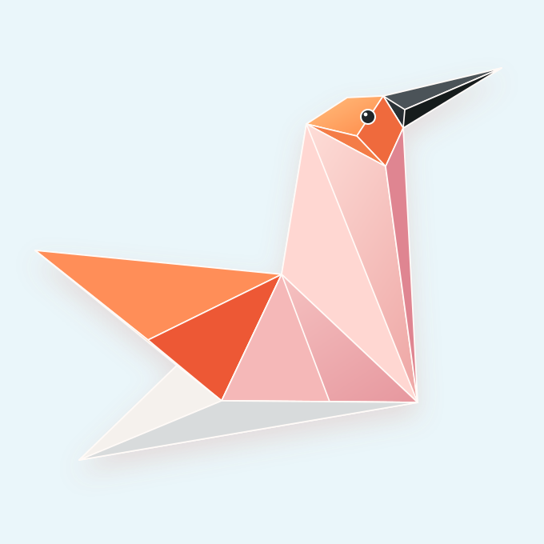
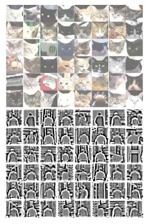
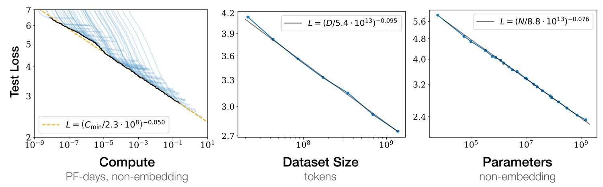
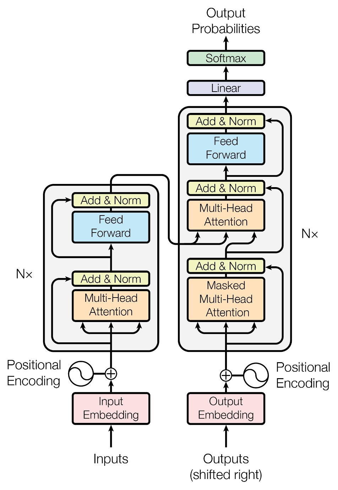
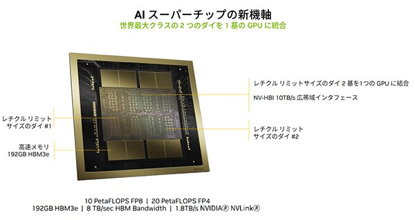

Chat
ChatGPT / Claude
質問、説明、アイデア出し、短い文章の下書き。主な成果は会話の中の回答です。
AIは魔法でも、正解を保管した巨大な辞書でもありません。仕組みと限界を知り、安全に対話しながら「自分を紹介するWebページ」を完成させます。
この出席票・アンケートは、佐渡市へ事業実績を提出するために必要なものです。回答がないと出席を確認できません。
未回答だと市への提出ができず、講師が本当に困ります。忘れずにお願いします。
右のQRコードをスマートフォンで読み取るか、次のリンクを開いてください。
出席票・アンケートを開く
第1回のゴールは、難しい用語を暗記することではありません。「AIへ何を任せ、何を人が確かめるか」を説明でき、自分の成果物を一つ持ち帰ることです。
生成AI、Transformer、GPUの役割を、身近なたとえを使って説明する。
入力してよい情報を判断し、AIの回答を自分で確認する。
AIと相談しながら、ブラウザで表示できる自己紹介HTMLを作る。
接続先とパスワード、電源、休憩場所、オンライン配信の音声を確認する。
お知らせ・質問・成果物共有の場所を確認する。機密情報の保管には使わない。
ログインとデータ設定を各自で確認する。パスワードや認証コードを他人へ渡さない。
事務局の案内に従い、料金・自動更新・解約方法を本人または保護者が確認する。
普段の仕事や生活のファイルから分け、架空の練習データだけを置く。
オンラインはカメラをオフにしてもよい。質問や成果発表は音声・チャットでも行える。
図1｜150分の使い方
制作時間には環境確認・休憩・個別質問を含みます。完成度より「一度動かす」ことを優先します。
ソフトウェア開発と生成AIの実案件、そしてAI・IT教育の経験を行き来しながら、皆さんの「作ってみたい」を形にする手伝いをします。
澤 良弘（さわ よしひろ）
miracleave株式会社 取締役 / エヌ次元株式会社 代表取締役 / 伝統文化と環境福祉の専門学校 AI・ITエンジニア講師 / CAIO評議会アンバサダー
東京工業大学工学部情報工学科卒業。在学中からソフトウェアエンジニアとして活動し、エヌ次元株式会社を設立。SI部門の事業譲渡後、miracleave株式会社の執行役員を経て取締役に就任しました。
現在は生成AI関連プロジェクトを統括するほか、伝統文化と環境福祉の専門学校でAI・ITエンジニア学科の講師も務めています。
| これまで | 経験 | この講座で活かすこと |
|---|---|---|
| プロダクト開発 | メルカリ、3M、アダストリア、アルペングループ、日立建機日本などで、要件定義・設計・実装に従事 | 難しい構想を、まず動く小さな形へ分ける |
| 生成AI案件 | 生成AI、音声認識、画像解析、検索拡張などのプロジェクトを推進 | AIの得意・不得意を踏まえた安全な試作を支援する |
| 教育・執筆 | AI・IT講師として教えるほか、Flutter、機械学習・AI・生成AI、Pythonの書籍を執筆 | 専門用語をかみ砕き、初学者が手を動かせる順番で伝える |
共通の知識を短く学んだあと、参加者それぞれの困りごとに取り組みます。講師は一方的に話し続けるのではなく、会場を回りながら相談・質問・レビューに応じます。
AI寺子屋の基本サイクル
第1〜6回は講義と制作、第7〜8回はプレゼンです。プログラムを書くことだけがゴールではありません。文書の整理、表計算の改善、手順の見直しも立派な成果です。
図2｜講座ロードマップ

佐渡にゆかりのあるエンジニアを応援し、交流できる場をつくるため、佐渡市IT教育事業の事業者が立ち上げたコミュニティです。講座の参加者だけでなく、佐渡のITやものづくりに関心のある人たちと一緒に盛り上げていきます。
#2026-ai寺子屋
日程、持ち物、会場、オンライン参加方法など、AI寺子屋に関する案内はこのチャンネルへ掲載します。講座中の連絡や、次回までの情報確認にも使用します。
QRコードをスマートフォンで読み取るか、次の招待URLを開いて参加してください。
https://discord.gg/g4BEJBhtC受講者同士や佐渡にゆかりのあるエンジニアが、作ったもの、仕事、学びたい技術などを話せる場として育てていきます。講座終了後の懇親会も、このDiscordで案内・開催する予定です。
名前が似ていても、AIへ任せる範囲と、結果の受け取り方が違います。境界が重なる機能もありますが、最初は次の3段階で考えると迷いません。
ChatGPT / Claude
質問、説明、アイデア出し、短い文章の下書き。主な成果は会話の中の回答です。
ChatGPT Work / Claude Cowork
調査、資料整理、文書・スライド・表の作成など、複数工程の仕事を確認できる成果物まで進めます。
Codex / Claude Code
開発フォルダを読み、ファイルを編集し、コマンドやテストを実行して、動くコードと変更差分を作ります。
HTMLファイルを実際に作り、ブラウザで確認し、直すところまで体験するためです。通常のChatへコードを質問するだけではなく、講座用フォルダを開発エージェントに渡して作業します。
比較図｜同じ依頼でも、返ってくるものが違う
機能には重なりがあります。ここでは「何を中心に作業する画面か」で整理しています。
この講座程度の、公開してよい内容の質問やアイデア出しには使って構いません。ただし、ハンズオンの説明はCodex / Claude Codeを基準にします。講座の実務方針として、個人向けGeminiを現実の仕事へ使うことは非推奨です。
Keep Activityがオンの場合、会話や共有したファイルなどがサービス改善・生成AIの学習に使われ、人が確認する場合があります。実務の秘密情報は入力しません。
対象エディションでは、組織外のモデル学習へ許可なく使わない保護が適用され、管理者が利用やデータアクセスを制御します。
顧客の許可・指示なしに、顧客データをAI/MLモデルの学習や微調整へ使わない契約上の制限があります。保持期間は別に確認します。
AI（人工知能）は、人が「知的」と感じる認識・予測・生成・判断支援などを、コンピュータで実現する技術の総称です。
図3｜AIの中に、機械学習・深層学習・生成AIがある
| 種類 | 何をするか | 身近な例 | 注意点 |
|---|---|---|---|
| ルールベース | 人が決めた条件で処理する | 「気温が30度以上なら警告」 | 想定外の条件には弱い |
| 機械学習 | 過去データから傾向を学ぶ | 需要予測、迷惑メール判定 | 学習データの偏りを受ける |
| 識別AI | 入力を分類・検出する | 画像内の物体検出、異常検知 | 「なぜ」の説明が難しい場合がある |
| 生成AI | 条件に合う新しい内容を作る | 文章、画像、音声、動画、コード | もっともらしい誤りも生成する |
生成AIは、大量のデータから言葉や画像のパターンを学び、入力された指示に合いそうな出力を組み立てます。学習した文章をそのまま検索して取り出す仕組みとは異なります。一方で、学習データに含まれる偏りや誤りの影響は受けます。
図4｜生成AIとの基本的な往復
AI研究の歴史は長く、期待と停滞を繰り返してきました。現在の進歩は、突然ひとつの発明だけで起きたのではなく、データ・計算資源・アルゴリズムが同時に進歩した結果です。
図5｜AI発展の大まかな流れ
大量の画像と大規模な計算を使い、明示的に「猫」と教えなくても猫の顔に反応する特徴を学べることが示されました。現在の生成AIとは仕組みが異なりますが、データ・アルゴリズム・計算資源を大きくする流れを象徴する研究です。

図6｜現在の生成AIを支える3つの力

LLM（Large Language Model、大規模言語モデル）は、文章を小さな単位に分け、文脈に続く可能性の高い単位を予測しながら文章を作ります。
AIは文章をそのまま人間と同じように読むのではなく、トークンという処理単位へ分けます。トークンは単語と一致することもあれば、単語の一部や記号になることもあります。
図7｜トークン化のイメージ（実際の分け方はモデルごとに異なる）
たとえば「佐渡の海は」の続きを作るとき、モデルは文脈から複数の候補に確率をつけ、その中から次のトークンを選びます。選ばれた語を加え、同じ処理を繰り返します。
図8｜次トークン予測のイメージ（数値は説明用）
LLMの中心は次トークン予測です。そのため文章が自然でも、内容が正しいとは限りません。存在しない制度、数字、URL、人物の発言などを、自然な文体で作ることがあります。これが一般にハルシネーションと呼ばれる現象です。
Transformerは2017年の論文「Attention Is All You Need」で提案されたニューラルネットワークの構成です。現在の多くのLLMを支える基礎になっています。
前から順番に情報を受け渡す。時系列に強い一方、処理の並列化や遠く離れた関係の保持が難しい。
文章内の各位置が他の位置との関係を見る。計算を並列化しやすく、離れた語の関係も扱いやすい。
「全文を一瞬で人間のように理解する」という意味ではない。数値化された関連度を計算している。
Attentionは、今処理している語に対して「文章のどこを、どの程度参照するか」を計算する仕組みです。人の注意そのものではなく、語と語の関連の強さを数値で表す計算だと考えてください。
図9｜「それ」が何を指すか、周囲との関係を見るイメージ
図10｜文章が次のトークン候補になるまで（簡略図）

GPU（Graphics Processing Unit）は、もともと画像を高速に描画するために発展した処理装置です。多数の小さな計算を同時に進めやすく、深層学習で多用される行列計算と相性がよいため、AIの学習・利用を支えています。

図11｜CPUとGPUは「得意な仕事」が違う
複雑な判断、OSやアプリの制御、順序が重要な処理が得意。
同じ種類の計算を大量に並列実行し、高い処理量を出すのが得意。
CPUは、注文を確認し、火加減を変え、急な変更にも対応できる経験豊富な料理人です。GPUは、同じ形の食材を大量に切る担当者が何百人も並ぶ調理場に似ています。どちらが優れているかではなく、仕事を分けることで速くなるのです。
図12｜モデルを作る学習と、作ったモデルを使う推論
AIは短時間で案を増やし、試作を助けます。しかし、目的を決め、材料を選び、結果を確かめ、公開や実行を決めるのは人です。
図13｜人が主導する改善ループ
うまくいかなければ、目的・材料・指示を見直してもう一周します。
| AIが得意 | AIが苦手・要確認 | 人が担う |
|---|---|---|
| たたき台を速く作る | 最新情報や地域固有情報の正確性 | 一次情報・公式情報との照合 |
| 複数案を出す | 曖昧な目的から唯一の正解を決める | 目的・優先順位・採用基準を決める |
| 文章の要約・変換 | 入力にない背景や暗黙の事情を知る | 必要な前提を与え、抜けを見つける |
| コードや表の試作 | すべての条件で安全に動く保証 | テストし、バックアップし、実行を判断する |
図14｜講座で扱うデータの目安
学習不使用の企業向け契約・設定、社内外のルール、必要性を確認し、最小化・匿名化して扱います。
今日の成果物は、ブラウザで表示できる1枚の自己紹介ページです。実名・住所・勤務先などは不要です。架空の名前やニックネームで構いません。
index.html をダブルクリックして開き、タイトル・紹介文・好きなこと・この講座で作りたいものが表示される。sado-ai-course フォルダを作る。lesson-01 フォルダを作る。ニックネームや架空名でよい。
食べ物、場所、趣味など2〜3個。
日常や仕事で少し面倒なこと。
8回の講座で試したい小さな成果物。
ページの主役にしたい色。
ほかの参加者に伝えたいこと。
次のプロンプトを貼り、自分の内容へ置き換えます。秘密情報は入れません。
あなたは、Web制作を初めて学ぶ人を支える先生です。
1ファイルだけで動く自己紹介ページをHTMLで作ってください。
【ページの内容】
・表示名：さど はじめ
・好きなこと：海を見ること、音楽、パン作り
・困りごと：地域イベントの情報が散らばって探しにくい
・この講座で作りたいもの：イベント情報を見やすくまとめるページ
・好きな色：青緑
・ひとこと：失敗を楽しみながら学びたいです
【条件】
・HTML、CSS、JavaScriptを1つの index.html にまとめる
・スマートフォンでも読みやすくする
・タイトル、自己紹介、好きなこと、作りたいものをカードで表示する
・外部サービスや外部画像は使わない
・難しい専門用語を避ける
・コード全体を省略せず、1つのコードブロックで出力するindex.html として保存するlesson-01 フォルダへ、名前を index.html として保存する。index.html をダブルクリックし、ブラウザで開く。index.html.txt になっている、コードの先頭や末尾が欠けている、全角の記号へ置き換わっている。表示されないときは、ファイル名とコピー範囲を確認します。一度に多く頼まず、一つずつ変更して表示を確認します。次の追加指示から2つ以上を試してください。
今のHTMLを土台にして、次の1点だけを変更してください。
「作りたいもの」のカードを一番目立つデザインにしてください。
変更後のコード全体を、省略せずに出してください。「紹介文をもっと親しみやすく」「専門用語をなくして」
「文字を少し大きく」「青緑を中心に」「余白を増やして」
「ボタンを押すと、ひとことが表示されるように」
「スマートフォンで崩れないか確認して修正して」
「初心者向けにHTMLとCSSの役割を3行で説明して」
「コードの不具合と直す箇所を先に説明して」
図15｜Webページを家にたとえる
<!doctype html>
<html lang="ja">
<head>
<meta charset="utf-8">
<meta name="viewport" content="width=device-width, initial-scale=1">
<title>わたしの自己紹介</title>
<style>
body { font-family: sans-serif; max-width: 720px; margin: auto; padding: 24px; }
.card { padding: 20px; border-radius: 16px; background: #e9f7f1; }
</style>
</head>
<body>
<main class="card">
<h1>こんにちは、さど はじめです</h1>
<p>海を見ることと、パン作りが好きです。</p>
</main>
</body>
</html>HTMLが思った通りに表示されません。初心者向けに原因を切り分けてください。
【期待した表示】
【実際の表示】
【直前に変更したこと】
【エラー表示】
このあとに現在のHTMLを貼ります。
※貼る前に、個人情報や秘密情報がないことを確認します。一人1〜2分を目安に、ページを表示しながら話します。カメラは不要です。うまくいかなかったことも、次の人を助ける成果です。
図16｜発表の4項目
index.html がブラウザで開くLLMは文脈に続きそうなトークンを予測して文章を作るため、自然さと正しさは一致しないからです。
文章内の各トークンが、ほかのどのトークンをどの程度参照するかという関連の強さを計算します。
深層学習で必要な同種の計算を、大量に並列実行して高い処理量を出しやすいからです。
佐渡市へ提出する事業報告に必要です。今日の出席とアンケートを送信してから終了しましょう。
回答がないと講師が困ります。ご協力をお願いします。
出席票・アンケートを開く
| 用語 | この講座での意味 |
|---|---|
| AI | 認識・予測・生成・判断支援など、人が知的と感じる処理をコンピュータで実現する技術の総称。 |
| 生成AI | 指示や材料から、文章・画像・音声・コードなどの新しい内容を生成するAI。 |
| LLM | 大量の文章から言葉のパターンを学んだ大規模言語モデル。 |
| トークン | モデルが文章を処理するときの小さな単位。単語、単語の一部、記号など。 |
| Transformer | Attentionを中心に文脈を処理し、並列計算しやすいニューラルネットワークの構成。 |
| Attention | 処理中のトークンが、文脈内のほかのトークンをどの程度参照するかを計算する仕組み。 |
| GPU | 多数の計算を並列に進めることが得意な処理装置。深層学習の計算を支える。 |
| 学習 | データからパターンを学び、モデル内部の値を調整する工程。 |
| 推論 | 学習済みモデルへ入力し、予測や生成結果を得る工程。 |
| ハルシネーション | 生成AIが、事実ではない内容をもっともらしく出力する現象。 |
| HTML | Webページの見出し・文章・リンクなど、内容と構造を記述する言語。 |
本教材の技術図は、学習者向けに概念を簡略化しています。製品の画面、料金、利用上限、規約は変わるため、講座直前に各サービスの公式情報を確認してください。